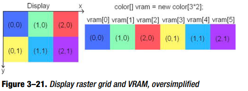

计算机图形学
计算机图形学 3D数学基础:图形与游戏开发
3D数学基础:图形与游戏开发 计算机图形学OpenGL
计算机图形学OpenGL 蓝宝书
蓝宝书 红宝书
红宝书 Badlogics
Badlogics  Libgdx
Libgdx 游戏开发宝典
游戏开发宝典 Shell Engine
Shell Engine技算机图形学(教材)
- 图形学简史
- 图形设备与显示系统
- 直，线，圆生成
- 二维图元填充
- 裁剪，反走样
- 图形变换
- 投影
- 三维形体的表示
- 面的消隐
- 真实感图形绘制
3D数学基础
 笛卡尔坐标系统
笛卡尔坐标系统 多坐标系
多坐标系 向量
向量 向量运算
向量运算 3D向量类
3D向量类 矩阵
矩阵 矩阵和线性变化
矩阵和线性变化 矩阵的更多知识
矩阵的更多知识 3D的方位与角位移
3D的方位与角位移技术机图形学(第四版本)OpenGL
 计算机图形学综
计算机图形学综 计算机图形硬件
计算机图形硬件 计算机图形软件
计算机图形软件 输出图元
输出图元 图元属性
图元属性 实现图元及属性算法
实现图元及属性算法 二维几何变换
二维几何变换 二维观察
二维观察 三维几何变化
三维几何变化 三维观察
三维观察 层次建模
层次建模 计算机动画
计算机动画 三维对象表示
三维对象表示 样条表示
样条表示 其他三维对象的表示
其他三维对象的表示 可见面判别法
可见面判别法 光照模型与面绘制算法
光照模型与面绘制算法 纹理与表面
纹理与表面 颜色模型与颜色应用
颜色模型与颜色应用 可编程shader
可编程shader 基于算法建模
基于算法建模红宝书
 OPenGL简介
OPenGL简介 状态管线和绘制几何物体
状态管线和绘制几何物体 视图
视图 颜色
颜色 光照
光照 混合,抗锯齿
混合,抗锯齿 显示列表
显示列表 绘制像素,位图,字体,图像
绘制像素,位图,字体,图像 纹理贴图
纹理贴图 帧缓冲区
帧缓冲区 分格化
分格化 求值器
求值器 选择和反馈
选择和反馈 openGL高级技巧
openGL高级技巧 shader
shader蓝宝书
 计算机图形的简单历史回顾
计算机图形的简单历史回顾 Depart_one
Depart_one 使用OPenGL
使用OPenGL 空间绘图
空间绘图 几何变换
几何变换 管线
管线 颜色,材料,基础知识
颜色,材料,基础知识 颜色是什么
颜色是什么 PC颜色硬件
PC颜色硬件 PC显示模式
PC显示模式 OpenGL中显示颜色
OpenGL中显示颜色 现实世界的颜色
现实世界的颜色 现实世界中的材料
现实世界中的材料 向场景添加光照
向场景添加光照 使用光源
使用光源 光照效果
光照效果 阴影
阴影 混合
混合 应用雾
应用雾 累积缓冲区
累积缓冲区 其他颜色操作
其他颜色操作 openGl中的图像
openGl中的图像 纹理贴图
纹理贴图 曲线和表面
曲线和表面 这就是管线
这就是管线 交互式图形
交互式图形 遮挡
遮挡 深度纹理和阴影
深度纹理和阴影 Part_TWo
Part_TWo 可编程管线
可编程管线 顶点着色
顶点着色 片段着色器
片段着色器 高级缓冲区
高级缓冲区 Part_three
Part_three window上的OpenGL
window上的OpenGL mac上的OpenGl
mac上的OpenGl Liunx上的OpenGl
Liunx上的OpenGl openGL ES
openGL ES Badlogics
- Android the new Kid on the block
- Fist step with the Android SDK
- Game Development 101
- ANdroid For game Developer
- An Android Game Developement FrameWork
- Mr.No Invaders Android
- openGL es : A gental introduction
- what is openGL ES and why should i care .
- The Programming Model
- Proejcttions
- Normalied Devices Space and Viewport
- Matrices
- The Rendering Pipeline
- before we begine
- GLSurfaceView
- GLGame
- get a Red Triangle
- specifyign pervertex color
- Texture mapping
- Indexed Verticeds
- Alpha Blending
- More Primitives: Points, Lines, Strips, and Fans
- 2D Transformations: Fun with the Model-View Matrix
- World and model space
- Matrices Again
- Transformations
- Rotation
- Scaling
- combing Transform
- Optimazing for performances
- Measuring Frame Rate
- The Curious Case of the Hero on Android 1.5
- What's making my openGL ES rendering SO slow ?
- Remving Unnecessary state changes
- Reducing Texture Size Means Fewer Pixels to be Fetched
- Reducing Calls to OpenGL ES/JNI Methods
- The Concept of Binding Vertices
- 2D game programming Trickds
- SUper Jumper :A 2D openGL ES Game
- OpenGL ES; GOing 3D
- Vertices in 3D
- Vertices3: Storeing 3D positions
- Perspective Projection
- Z-buffer: Bringing Order into Chaos
- Defining 3D meshes
- A Cube
- Matrices and Transfor mations Again
- The Matrix Stack
- A Simple Crate Solar System
- 3D Programming Trikds
- Vector in 3D
- Lighting in OpenGl ES
- Mipmapping
- Simple Cameras
- Loading Models
- The Wavefront OBJ format
- IMplementing an OBJ Loader
- Using the OBJ Loader
- SOme Noteds On Loading Models
- A Little Physics in 3D
- Collision Detection and Object Representation in 3D
- Bounding Shapes in 3D
- Bounding Spapes in 3D Overlap Testing
- GameObject3D and DynamicGameObject3D
- Droid invaders: The Grand finale
- publishing Your Game
- WHat's the NExt
- Unreal Development Kit www.udk.com
- Unity http://unity3d.com
- Ardor3D www.ardor3d.com
- The new Kid of the block
- Nothing
- Game development 101
- Graphics
- Of Rasters , pixeds, and FrameBuffers
- 关于X坐标向右，Y坐标向下解释如下，每个pixle 的地址可以由坐标很好的转化
- int Address = x + ｙ＊ rasterWidth； int x = address %rasterWidth int y = address / rasterWidth;
- 
- Vsync and Double-buffer
- 同步与双缓冲解决刷新率的问题。
- What Color
- ４００ｎｍ－７００ｎm的光波
- Color Models
- 常用的是ＲＧＢ的模型

- Encoding COlors Digitally
- 通常来说有两种编码方式 RGB＿８８８ RGB＿５６５ 因为人眼可以看绿是多于红和蓝
- ＲＧＢ＿８８８ 每个相素 ３／４ｂｙｔｅ，所有的颜色范围 １６００Ｗ色 （０－２５５，０－２５５，０－２５５）
- ＲＧＢ＿５６５ 每个相素 ２ｂｙｐｅ 所有的颜色范围 ６５０００色 （０－３２，０－６４，０－３２）
- image Formats and compression
- JPEG，ＪＰＧ ，PNG
- JPEG是有损压缩，PNG,是无损。JPEG会丢失一些原始信息
- Alpha compositing and blending
- 透明度可以理解为我要占比多少，取极限即可说明
- final.red = src.alp +ｄｓｔ＊（１－ａｌｐ）；
- final.ｂｌｕｅ = src.alp +ｄｓｔ＊（１－ａｌｐ）；
- final.ｇｒｅｅｎ = src.alp +ｄｓｔ＊（１－ａｌｐ）；
- in practice
- Game FrameWork
- openGL es : A gental introduction
- what is openGL ES and why should i care .
- 简单来说就是一个绘制三角形的机器。
- The Programming Model
- 物体
- Lights 光照
- Camera 相机
- Viewport 视口

- Proejcttions
- 正交投影
- 远近的物体看起来是一样大，一般用在2D图形中。
- 透视投影
- 越远的物体就越小，和眼看到的真实场景差不多。
- Normalied Devices Space and Viewport
- Matrices
- 在图形学中矩阵多数时间是代表着一种变化，如，平移，缩放，旋转，投影。
- 模型矩阵
- 我们可以使用这个矩阵来移动、旋转或缩放点。
- 投影矩阵
- 完成我们空间坐标投影到平面坐移。
- 纹理矩阵
- 可以用来操作纹理坐标。
- The Rendering Pipeline
- 事实上openGl是一个状态机。

- 三角形中的所有顶点经过模型矩阵变化，形成了新的位置。
- 然后新的位置再经过投影矩阵变化，把3D空间的位置投影到了2D屏幕。
- 同时光照，物料，加到这个过程中，形成了颜色。
- 再经过裁剪，这个时间这些信息会存储到帧缓冲中framebuffer。
- 作为最后一步，OpenGL基于,从照明阶段的颜色，纹理应用到三角形，以及三角形的每个像素可能或可能不存在的混合状态。与帧缓冲器中的像素相结合
- GLSurfaceView
- 一个单独的绘制线程
- 真的绘制在Render接口里面实现。

- get a Red Triangle
- Define the viewport
- Define the Project Matrix
- Specifying Trangles
- SPecifying Per Vertex Color
- Texture Mapping
- Texture Coordinate
- uploading Bitmaps
- Texture Filtering
- Disposiing of Texture
- Alpa Blending
- More Primitives: points,Lines,Strips,and Fans
- 2D Transformations
- World and Model Space
- Matriced Again
- Optimizing for Performance
- Opengl GL ES ： GOing 3D
- Vertices in 3D
红宝书
蓝宝书
游戏开发宝典
Libgdx
Graphics
- Rendering through OpenGL ES 2.0 on all platforms
- Custom OpenGL ES 2.0 bindings for Android 2.0 and above
- Low-Level OpenGL helpers:
- Framebuffer objects (GLES 2.0 only)
- Shaders, integrating easily with meshes
- Automatic software or hardware mipmap generation
- ETC1 support (not available in Javascript backend)
- Automatic handling of OpenGL ES context loss. Restores all textures, shaders and other OpenGL resources
- High-level 2D APIs:
- Custom CPU side bitmap manipulation library
- Bitmap fonts (does not support complex scripts like Arabic or Chinese). Either generated offline or loaded from TTF files(unsupported in Javascript backend)
- TMX tile map support
- 2D UI library, based on scene-graph API, fully skinable
- High-Level 3D APIs:
- Decal batching, for 3D billboards or particle systems
- 3D rendering API with materials and lighting system and support for loading FBX models via fbx-conv
Shell Engine
ProList
 GLContentView如何和普通的Activity兼容
GLContentView如何和普通的Activity兼容 GLContentView如何兼容普通的View.
GLContentView如何兼容普通的View. GLContentView OpenGL的通路
GLContentView OpenGL的通路 Engine中纹理是如何管理的
Engine中纹理是如何管理的 纹理ID在哪生成.
纹理ID在哪生成. 线程在那开启的.如何管理
线程在那开启的.如何管理 Bitmap/Texture/Drawable
Bitmap/Texture/Drawable - GLContentView如何和普通的Activity兼容
- GLContentView如何兼容普通的View.
- Engine中纹理是如何管理的
- 线程在那开启的.如何管理
- 在GLSurfaceView内部管理
- setRender时候线程会开启.
- 在不同的状态下GlThread会以GLSurfaceView为入口管理生命周期
- 在Engine中GLContentView继承GLSurfaceView所以都是系统在管理
- Bitmap/Texture/Drawble
- Bitmap
- Bitmap是AndroidAPI产物
- 定义宽,高,编码格式
- 编码格式物理,决定了物理大小,可显示得色域.
- 最终表现为像素数据.
- Texture
- 一个整型句柄.(OpenGl中得概念)
- Drawble
- 可绘制得东西得抽象.
- 无任何接口与用户交互得.
resource